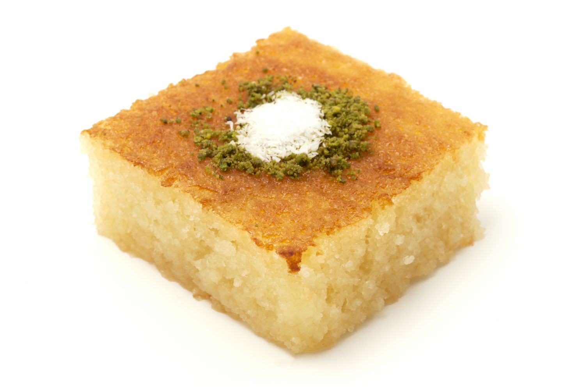

Revani

Description
Revani is a sweet, syrup-soaked semolina cake that originated in
Egypt. The semolina batter is baked in a sheet pan, then sweetened with
orange flower water, rose water or simple syrup, and typically cut into
diamond shapes or squares.
The dish has also spread within most areas of the former Ottoman Empire.
Ingredients
- Flour
- Semolina
- Eggs
- Sugar
- Baking powder
- Salt
- Vanilla extract
- Butter
Steps
- In the bowl of your mixer, add eggs and sugar then beat well until the mixture gets pale and fluffy.
- Pour in melted butter and vanilla extract then beat again to mix.
- In a separate bowl, add flour, semolina, baking powder and salt then mix well.
- Gently incorporate the dry ingredient using a spatula in three batches. Pour cake batter into a prepared 9 inch pan and bake for 25-30 minutes.
- Take the cake out, poke several times using a toothpick. Pour the cooled syrup over while it is still hot. Let the cake rest for a couple of hours.
- Invert the cake over your serving platter and decorate top with coconut flakes.